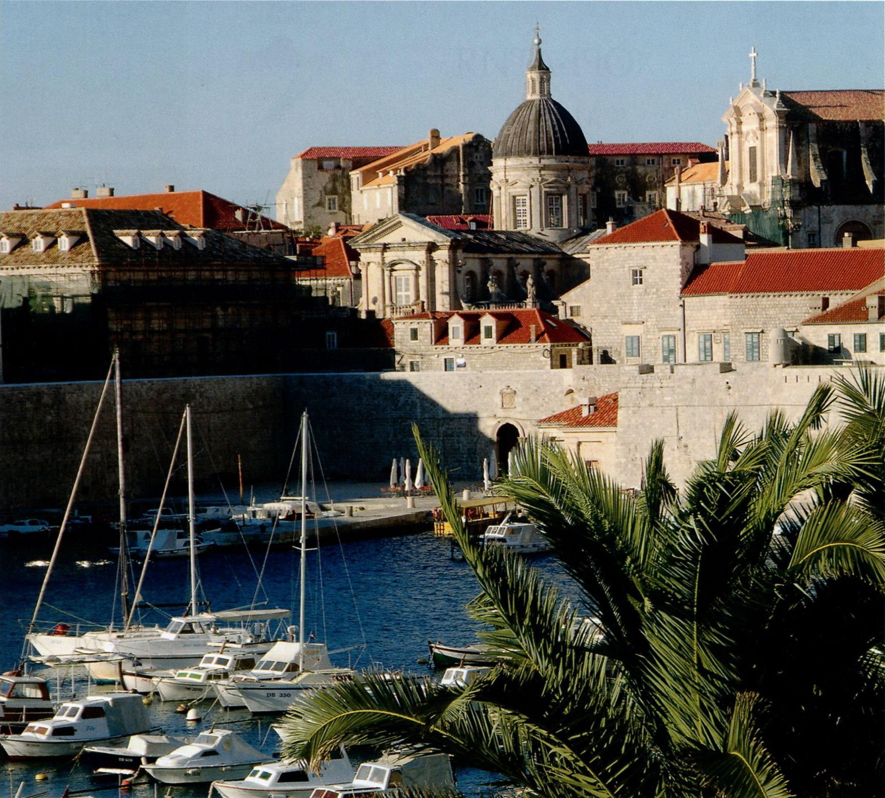

- Город Карловац к юго-западу от Загреба был основан Габсбургами в конце XVI в. как крепость, защищающая долину от турецкого вторжения. Турки осаждали его семь раз и ни разу не взяли
- Одной из достопримечательностей острова Млет являются его уникальные обитатели — мангусты. Их завезли сюда еще в средние века для борьбы со змеями, которых на острове было очень много. Однако маленькие смелые зверьки чуть не стали бедствием для природы Млета, начав поедать яйца редких птиц. Экосистема едва восстановила баланс.
- В Далмации очень популярны клапы — мужские ансамбли из 4-16 певцов, виртуозно исполняющие многоголосые народные песни.
- Остров Паг знаменит своим деликатесным сыром из овечьего молока с оливковым маслом. На этом острове растет особенная соленая трава, которую едят овцы.
ХОРВАТИЯ
Между Дравой и Адриатикой
ДОЛГИЙ ПУТЬ В ЕС
В раннем средневековье на территории между рекой Цетина и горным массивом Велебит сформировалось ядро Хорватского государства, постепенно расширявшего свои границы.
- Древнеримский амфитеатр и триумфальная арка в Пуле;
- Кафедральный собор и старый город в Риеке;
- Византийские и романские храмы в Задаре;
- Исторические города Трогир и Шибеник;
- Крепость между Tpoгиром и Сплитом;
- Дворец Диоклетиана в Сплите;
- Старый город в Дубровнике;
- Национальные парки: Плитвицкие озера (Plitvicka jezera), Крка, Млет, и другие;
- Острова в Далмации;
- Загреб.
- Официальное название: Республика Хорватия.
- Столица: Загреб, 804 200 чел. (2008 г.).
- Крупнейшие города: Загреб, Сплит, Риека, Осиек, Задар, Славонски-Брод.
- Денежная единица: куна.
- Религия: католики (87,8%), православные(4,4%), мусульмане (1,3%).
- Крупнейшие аэропорты: Загреб, Сплит, Дубровник, Пула
Умеренный в континентальной части, средиземноморский в Далмации. Средняя температура на побережье: +9*С в январе и +25*С в июле; в континентальной части соответственно -1*С и +20*С.
В 803 г. Карл Великий подчинил себе Истрию и часть Далмации, но после его смерти удерживать власть над хорватскими землями франкам стало непросто. В 819 г. князь Паннонии Людевит Посавский поднял восстание, заключив союз с другими южнославянскими племенами. В течение трех лет попытки франков подавить мятеж оканчивались неудачей, и часть Хорватии вышла из-под контроля франков. Первое упоминание названия «Хорватия» относится к 852 г., когда этими землями управлял князь Трпимир. При нем и началось возвышение княжества, которое достигло пика своей мощи при князе Томиславе, объединившем в начале X в. земли Паннонии и Далмации. В 925 г. Томислав принял титул короля Хорватии. Королевство было разделено на 11 областей — жупаний. Крупнейшими из них стали территории Паннонии, Далмации, Боснии и Славонии. Так держава простерлась от Адриатики до реки Драва. Государство оставалось независимым вплоть до договора с Венгрией 1102 г., по которому Хорватия вошла в ее состав, но до конца существования унии сохраняла автономию и традиции. В начале XV в. Венеция завладела Адриатическим побережьем, а в 1526 г. войска Сулеймана Великолепного разгромили венгров в битве при Мохаче, и часть хорватских земель отошла к Османской империи. В этой критической ситуации хорваты решили отдать трон Габсбургам. В итоге в течение XVII-XVIII вв. континентальная часть современной Хорватии принадлежала Австрии, Истрия и Далмация — Венеции, и только Дубровницкая Республика оставалась независимой, пока не прекратила свое существование в ходе наполеоновских войн. Передел Хорватии продолжался до XIX в. После Первой мировой войны образовалось Королевство сербов, хорватов и словенцев, позднее переименованное в Королевство Югославия. Во время Второй мировой войны Германия и Италия, оккупировавшие Югославию, создали фашистское Независимое государство Хорватия, которое включало Славонию, часть Далмации и Боснии. После Второй мировой войны эти территории вошли в состав Социалистической Федеративной Республики Югославии под руководством Иосифа Броз Тито. На фоне общего развала социалистической системы Хорватия в 1991 г. объявила о своей независимости, вслед за чем началась война между хорватами и местными сербами, поддерживаемыми Югославской армией. В 1998 г. Хорватия полностью восстановила свои границы в том виде, в каком они существовали в СФРЮ, после чего началось активное восстановление экономики страны, ставшей кандидатом на вступление в ЕС.
Территория Хорватии имеет необычиую форму. Она, как плоскогубцами, обхватывает Боснию и Герцеговину.
- Площадь: 56 594 км2.
- Население: 4 489 409 (2009 г.) (89,6% — хорваты, 4,5% — сербы, 5,9% — остальные).
- Самая высокая точка: Динара (1831 м).
- Плотность населения: 79,3 чел./км2.
Сельское хозяйство: выращивание зерновых, бобовых, оливок, подсолнечника, цитрусовых, виноградарство, животноводство. Промышленность: легкая (текстильная) пищевая, металлургическая, химическая, добыча и переработка нефти, деревообрабатывающая, электротехническая, фармацевтическая, судостроение. Туризм

Дубровник, один из красивейших городов Европы. Территория Старого города включена в Список Всемирного наследия ЮНЕСКО.
НА СТЫКЕ ВОСТОКА И ЗАПАДА
Смесь центрально-европейского романтизма и восточного гостеприимства создает особое очарование Хорватии.
Хорватию условно можно разделить на три части: континентальную, лежащую главным образом в бассейне реки Савы (на Среднедунайской низменности), горную (Динарское нагорье) и Адриатическую (узкая кромка берега моря, ограниченная с востока горами, и острова). На севере страны, в пределах Среднедунайской низменности, лежит Славония историческая область и житница Хорватии. Эта плодородная равнина в основном используется под пашню. Над ней возвышаются холмы и невысокие горы, на склонах которых созданы благоприятные условия для выращивания садов и виноградников. Через эту область протекают большие судоходные реки Дунай, Сава и Драва. Из крупных городов здесь расположены Вараждин, Сисак, Осиек, Славонски-Брод. Горный район является частью Динарского нагорья. В местных известняковых скалах сильно развиты различные карстовые явления, определяющие своеобразный рельеф с котловинами, пещерами и каньонами. В этом районе расположено большинство национальных парков Хорватии, самый известный из которых Плитвицкие озера — включен в Список Всемирного наследия ЮНЕСКО. На территории заповедника множество крупных и мелких живописных озер, расположенных каскадами, 140 водопадов, к которым каждый год добавляются новые, два десятка пещер и уникальный буковый лес. Это необыкновенный комплекс, созданный и регулярно восстанавливаемый самой природой. Область Адриатики характеризуется исключительной сложностью берега. Крупнейшие полуострова Истрия на севере и Пелешац на юге, острова — Крк, Црес, Хвар, Брач и Корчула. Для этой области характерны голые известняковые скалы и скудная растительность с редкими пастбищами, кустарниками и деревьями. Однако именно эти земли славятся своими виноградниками и оливковыми рощами. Адриатическое побережье с его живописными островами представляет собой туристическую Мекку Хорватии. Основные центры туризма Пула, Опатия, Дубровник и Сплит, в котором римский император Диоклетиан построил огромный дворец. Хорватия славится и культурными мероприятиями международного масштаба. Уже более половины столетия ежегодно проводится кинофестиваль в Пуле и Международный детский фестиваль в Шибенике. Во время знаменитого летнего фестиваля в Дубровнике ежегодно дается около сотни театральных представлений. Музыкальный фестиваль в Опатии был и остается весьма престижным в музыкальных кругах всего балканского региона.